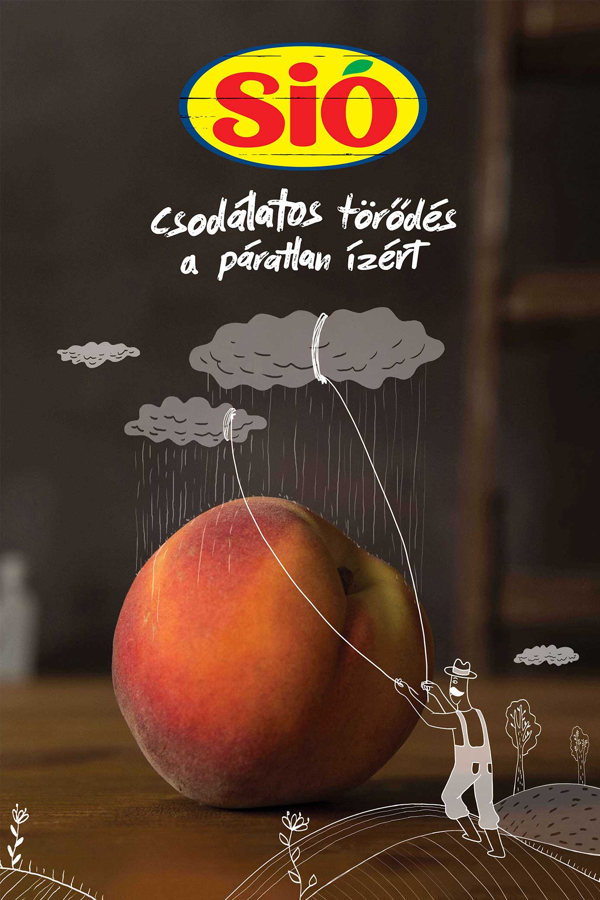
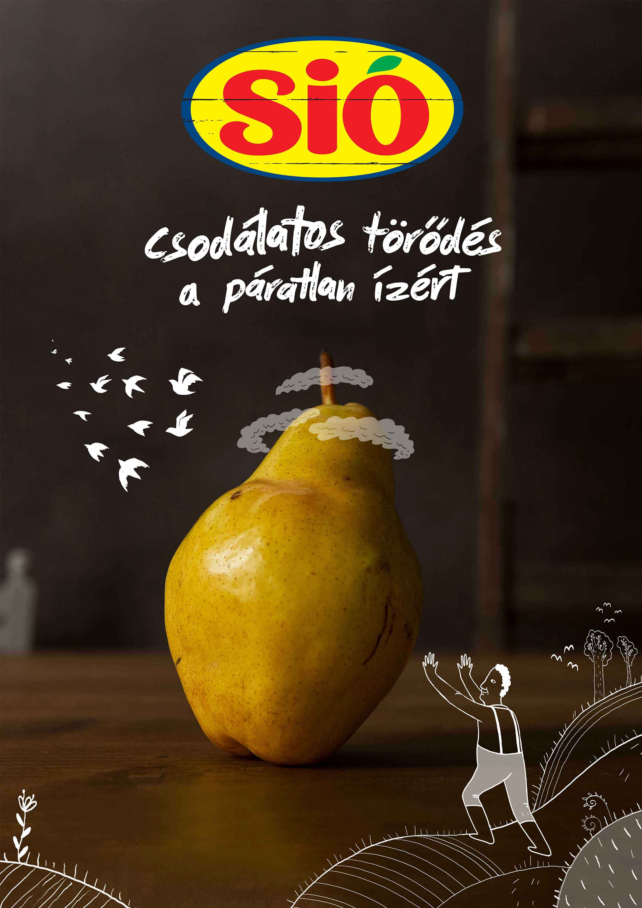
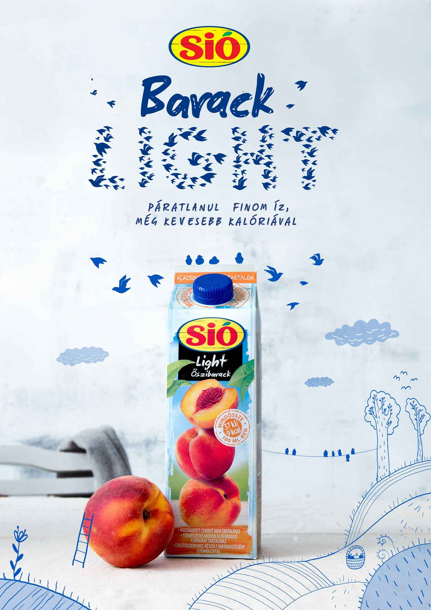
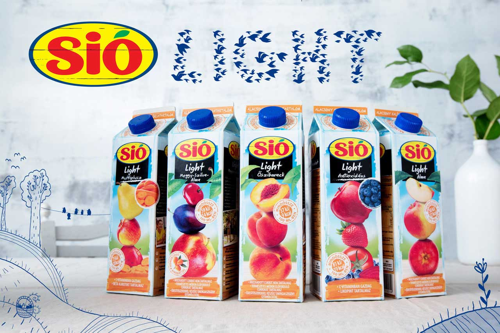
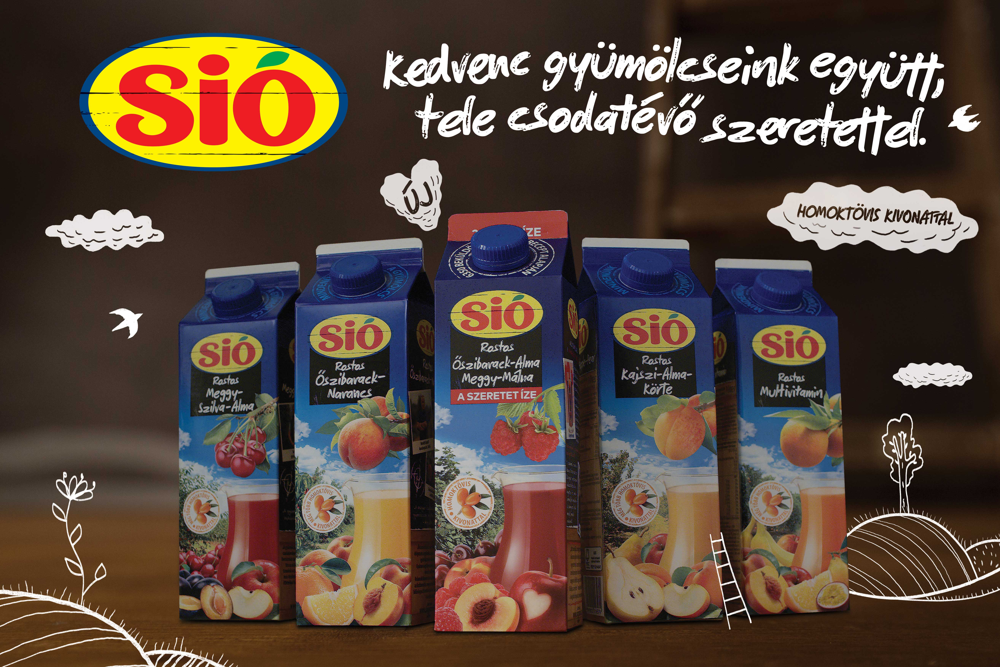
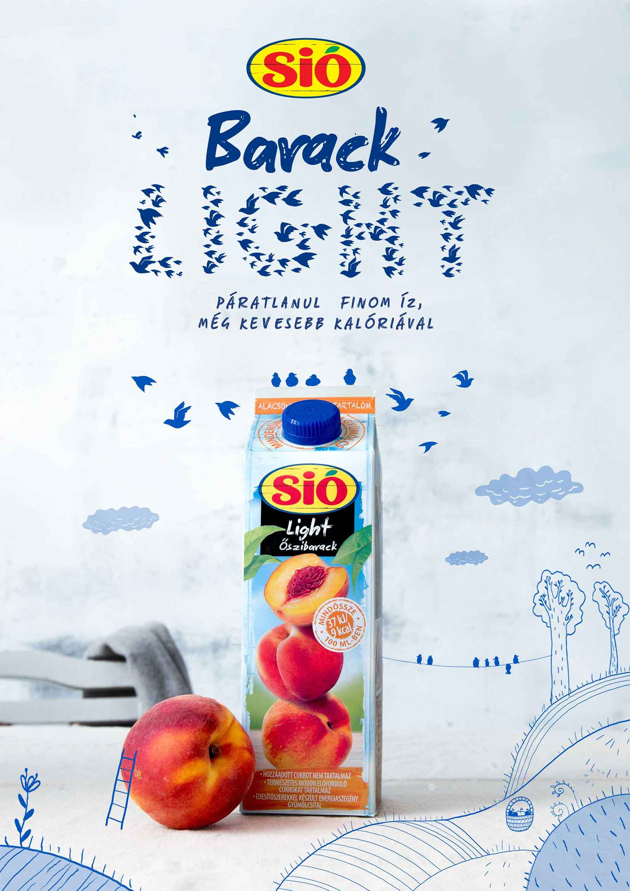
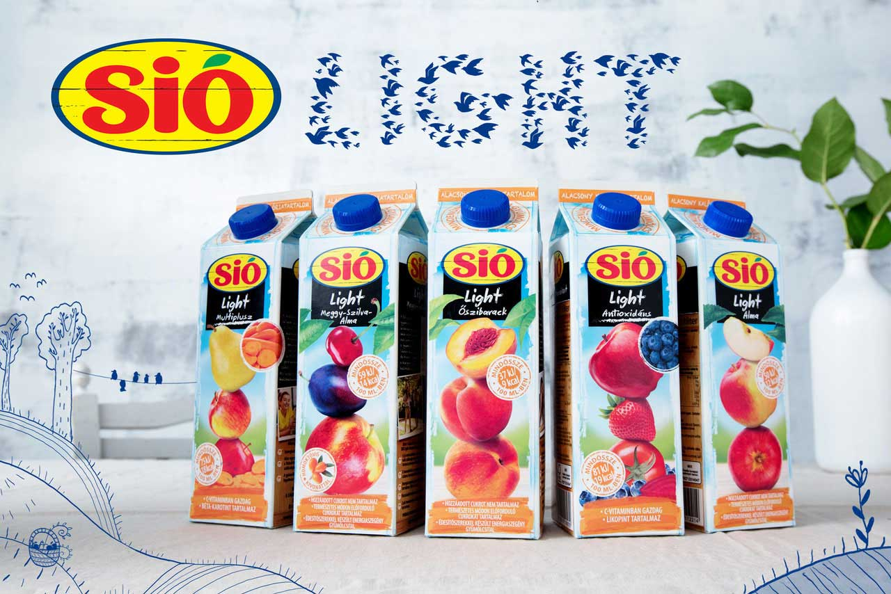
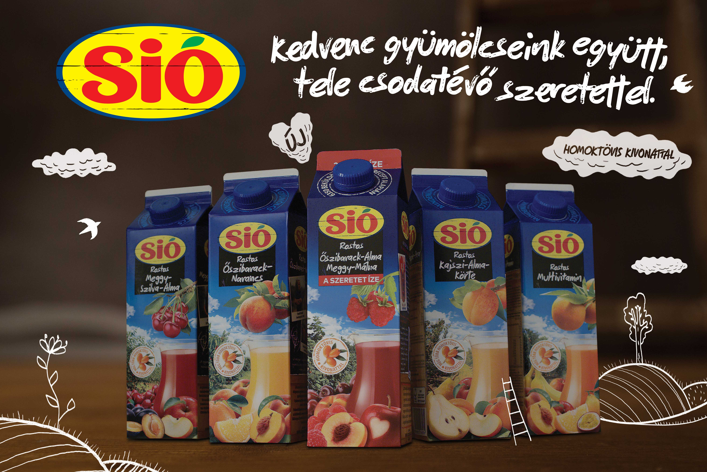

Caring for something often means that you go the extra mile, you learn new things and you technically develop super powers to maintain the safety of those things. If Sio fruits could speak, they would tell you exactly just this.
Key Visuals
 
 




